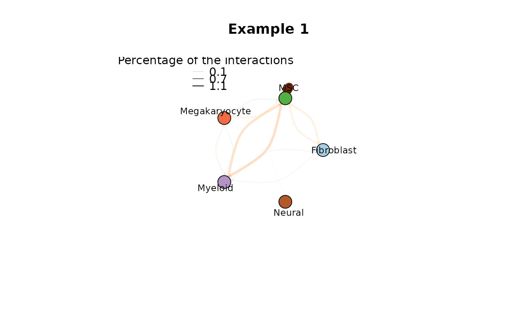

This function do a CCI plot
plot_cci(
graph,
colors,
plt_name,
coords,
emax = NULL,
leg = FALSE,
low = 25,
high = 75,
ignore_alpha = FALSE,
log = FALSE,
efactor = 8,
vfactor = 12,
vnames = T,
pg = NULL
)Paths of single condition LR data
Cell type (Cluster) Colors
Plot Name (Title)
object coordinates
Max MeanLR across the all inputs, if its not defined, the method going to consider the max find within a sample
Set color legend
Lower threshold: This parameter low and high defines the edges
Higher threshould which will be filtered. Edges within the interval [low\,high] are filtered.
not include transparency on the plot
logscale the interactions
edge scale factor
edge scale factor
remove vertex labels
pagerank values
R default plot
paths <- c('CTR' = system.file("extdata",
"ctr_nils_bm_human_newformat.csv",
package = "CrossTalkeR"),
'EXP' = system.file("extdata",
"exp_nils_bm_human_newformat.csv",
package = "CrossTalkeR"))
genes <- c('TGFB1')
output = system.file("extdata", package = "CrossTalkeR")
data <- generate_report(paths,
genes,
out_path=paste0(output,'/'),
threshold=0,
out_file = 'vignettes_example.html',
output_fmt = "html_document",
report = FALSE)
#> Reading Files
#> Create a Differential Table
#> Calculating CCI Ranking
#> EXP_x_CTR
#>
#> Calculating GCI Ranking
#> EXP_x_CTR
#> Annotating the top Cell Genes
#> 'select()' returned 1:many mapping between keys and columns
#> 'select()' returned 1:many mapping between keys and columns
#> 'select()' returned 1:many mapping between keys and columns
#> 'select()' returned 1:many mapping between keys and columns
#> 'select()' returned 1:many mapping between keys and columns
#> 'select()' returned 1:many mapping between keys and columns
#> 'select()' returned 1:many mapping between keys and columns
#> 'select()' returned 1:many mapping between keys and columns
#> 'select()' returned 1:many mapping between keys and columns
#> 'select()' returned 1:many mapping between keys and columns
#> 'select()' returned 1:many mapping between keys and columns
#> 'select()' returned 1:many mapping between keys and columns
#> 'select()' returned 1:many mapping between keys and columns
#> 'select()' returned 1:many mapping between keys and columns
#> 'select()' returned 1:many mapping between keys and columns
#> 'select()' returned 1:many mapping between keys and columns
#> 'select()' returned 1:many mapping between keys and columns
#> 'select()' returned 1:many mapping between keys and columns
#> 'select()' returned 1:many mapping between keys and columns
#> 'select()' returned 1:many mapping between keys and columns
#> 'select()' returned 1:many mapping between keys and columns
#> 'select()' returned 1:many mapping between keys and columns
#> 'select()' returned 1:many mapping between keys and columns
#> 'select()' returned 1:many mapping between keys and columns
#> 'select()' returned 1:many mapping between keys and columns
#> 'select()' returned 1:many mapping between keys and columns
#> 'select()' returned 1:many mapping between keys and columns
#> 'select()' returned 1:many mapping between keys and columns
#> 'select()' returned 1:many mapping between keys and columns
#> 'select()' returned 1:many mapping between keys and columns
#> 'select()' returned 1:many mapping between keys and columns
#> 'select()' returned 1:many mapping between keys and columns
#> Defining templates
#> Adding missing grouping variables: `cellpair`
#> Adding missing grouping variables: `cellpair`
#> DONE!
plot_cci(graph = data@graphs$CTR,
colors = data@colors,
plt_name = 'Example 1',
coords = data@coords[igraph::V(data@graphs$CTR)$name,],
emax = NULL,
leg = FALSE,
low = 0,
high = 0,
ignore_alpha = FALSE,
log = FALSE,
efactor = 8,
vfactor = 12,
vnames = TRUE)
